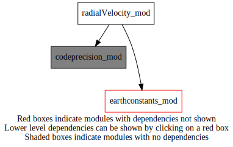
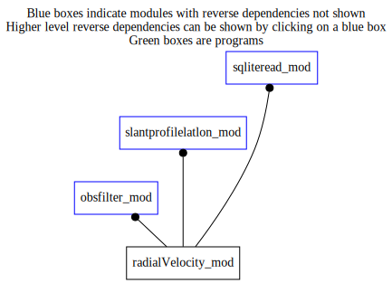

radialVelocity_mod¶
Dependency Diagrams:
 Direct Dependency Diagram¶
 Reverse Dependency Diagram¶
Description
MODULE radialVelocity_mod (prefix=’rdv’ category=’5. Observation operators’)
- Purpose
Containing commonly used functions for the assimilation of Doppler velocity.
Quick access
Needed modules
codeprecision_mod: MODULE codePrecision_mod (prefix=’pre’ category=’8. Low-level utilities and constants’)
earthconstants_mod: MODULE earthConstants_mod (prefix=’ec’ category=’8. Low-level utilities and constants’)Variables
Subroutines and functions
- subroutine radialvelocity_mod/rdv_getlatlonhrfromrange(antennalat, antennalon, beamelevation, beamazimuth, radaraltitude, beamrange, latslant, lonslant, beamheight, beamdistance)¶
- Arguments
antennalat [real ,in]
antennalon [real ,in]
beamelevation [real ,in]
beamazimuth [real ,in]
radaraltitude [real ,in]
beamrange [real ,in] :: in
latslant [real ,out]
lonslant [real ,out]
beamheight [real ,out]
beamdistance [real ,out]
- Called from
- subroutine radialvelocity_mod/rdv_getrangefromh(beamheight, radaraltitude, beamelevation, beamrange)¶
- Purpose
Computation of range of the radar beam from height of the radar beam
- Arguments
beamheight [real ,in]
radaraltitude [real ,in]
beamelevation [real ,in]
beamrange [real ,out]
- Called from
{kind=link}
{kind=link}